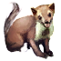
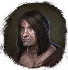

Габи
Предметы / С заданий
Открыть в интерактивной вики →
| Вес | 80 |
|---|---|
| Цена | 1 000 |
Описание
Куница, выдрессированная Стасиком

Стасик. Может красть яйца из птичьих гнезд.| Куница, которую выдрессировал Стаська. Умеет таскать яйца из птичьих гнёзд. |
Применение
|
Как добыть
| Покупка у Стаськи за 50 000 золота во время активного Ежедневное задание Сокольничья. Если Габрыся принесёт Разбитое яйцо ястребенка, её можно купить снова.  |